Economía Internacional — Clase 2
Los indicadores para analizar la economía internacional
UMET - Licenciatura en Economía | 2026
Agenda: Los 9 indicadores
- Indicadores de comercio (1-4): volumen, participación, concentración, datos
- Indicadores de competitividad (5-7): balanza, apertura, términos de intercambio
- Indicadores de sostenibilidad (8-9): cuenta corriente, tipo de cambio real
- Hechos estilizados: patrones que vemos con estos indicadores
- Aplicación: Argentina y los desequilibrios globales
Indicadores de comercio (1-4)
Midiendo el comercio mundial
Indicador 1: Índice de comercio mundial
- Fórmula: I_t = 100 × (Comercio_t / Comercio_base)
- Año base típico: 1913 = 100 (pico pre-guerra)
- Si I_t = 200 → comercio es el doble del año base
- Permite comparar a través del tiempo sin distorsión de precios
Índice de comercio mundial (1800-1938)

Fuente: Federico-Tena World Trade Historical Database
- 1800: índice 2.4 (casi nada)
- 1870: índice 25 (x10 en 70 años)
- 1913: índice 100 (pico)
- 1932: índice 74 (colapso -26%)
Indicador 2: Participación regional
- Fórmula: s_r = (X_r / X_mundo) × 100
- Mide qué porcentaje del comercio mundial tiene cada región
- Permite ver quién "gana" y quién "pierde" participación
- Europa dominó el siglo XIX; Asia crece en el XXI
Participación regional (1800-1938)
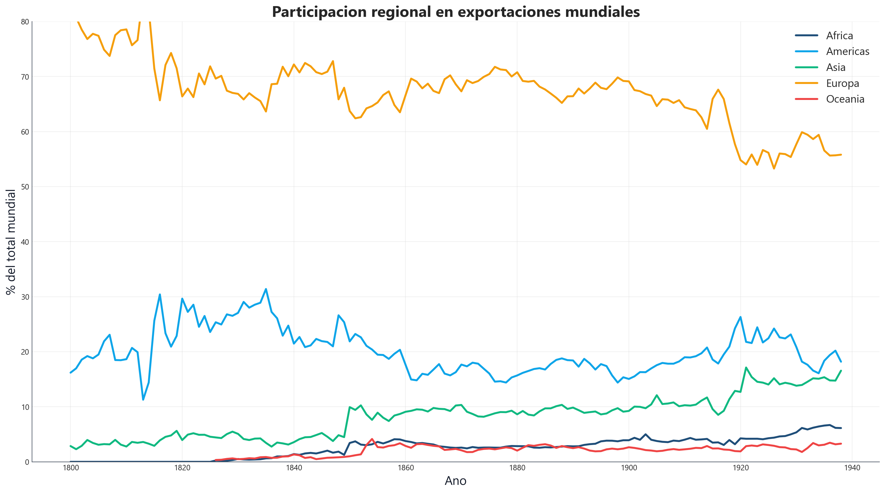
Fuente: Federico-Tena World Trade Historical Database
- Europa: de 70% a 60% (sigue dominando)
- América: de 10% a 20% (crece con EEUU)
- Asia: de 15% a 15% (estancada hasta post-WWII)
- África/Oceanía: marginales
Indicador 3: Concentración (HHI)
- Fórmula: HHI = Σ(s_i)² donde s_i es la participación de cada país
- Rango: 0 (muy diversificado) a 10.000 (un solo país)
- HHI < 1.500: mercado competitivo
- HHI > 2.500: mercado concentrado
Concentración del comercio (HHI)

Fuente: Federico-Tena World Trade Historical Database
- 1800: HHI alto (pocos países comercian)
- 1913: HHI más bajo (más países participan)
- Hoy: HHI bajo pero China crece rápido
- Tendencia reciente: ¿reconcentración?
Indicador 4: Cobertura de datos

Fuente: Federico-Tena World Trade Historical Database
- Mide qué % de países tienen datos confiables
- 1800: cobertura baja (pocos registros)
- 1913: cobertura alta (aduanas modernas)
- Siempre reportar la cobertura de las fuentes
- Advertencias: precios vs cantidades, comercio bruto, fuentes distintas
Indicadores de competitividad (5-7)
¿Es el país competitivo en el comercio mundial?
Indicador 5: Balanza comercial
- Fórmula: BC = X - M (exportaciones menos importaciones)
- BC > 0: superávit comercial (exporta más)
- BC < 0: déficit comercial (importa más)
- Se mide en USD o como % del PIB
Balanza comercial Argentina (1960-2023)
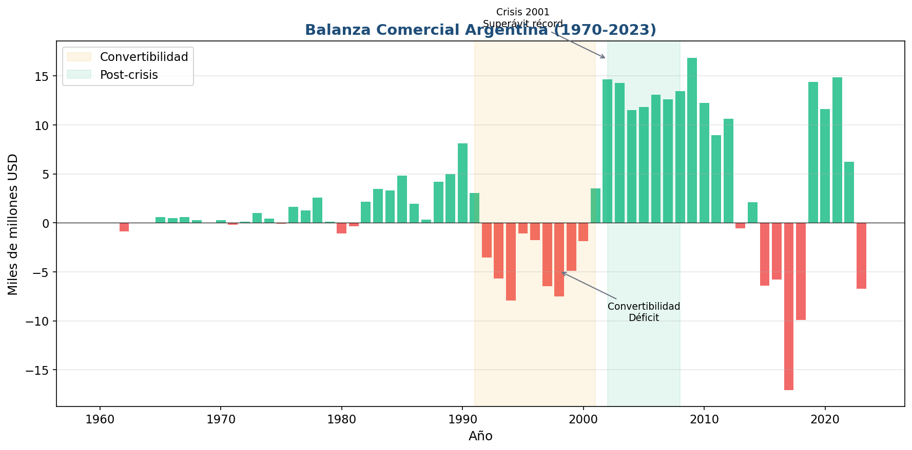
Fuente: Banco Mundial / INDEC
- Déficit en Convertibilidad (1991-2001)
- Superávit récord post-crisis 2002
- Ciclo: peso caro → déficit, peso barato → superávit
- Volatilidad extrema comparado con otros países
Balanza comercial comparada (% PIB)

Fuente: Banco Mundial
- EEUU: déficit persistente (privilegio del dólar)
- Alemania: superávit persistente (competitividad industrial)
- China: superávit desde 2000 (fábrica del mundo)
- Argentina: alta volatilidad (ciclo cambiario)
Indicador 6: Apertura comercial
- Fórmula: Apertura = (X + M) / PIB × 100
- Mide qué tan integrado está un país al comercio mundial
- Países grandes (EEUU, Brasil): apertura baja (~25-30%)
- Países pequeños (Singapur, Bélgica): apertura alta (>100%)
Apertura comercial comparada
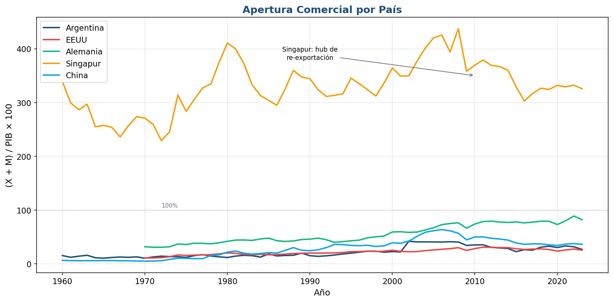
Fuente: Banco Mundial
- Singapur: 300-400% (re-exportación, es un hub)
- Alemania: ~80% (industria exportadora)
- China: 30-40% (mercado interno creció)
- Argentina y EEUU: 25-35% (economías "cerradas")
Indicador 7: Términos del intercambio (ToT)
- Fórmula: ToT = (Precio exportaciones / Precio importaciones) × 100
- ToT > 100: mejora (las export valen más que las import)
- ToT < 100: deterioro (las export valen menos)
- Clave para países exportadores de commodities
Términos del intercambio Argentina (1900-2023)
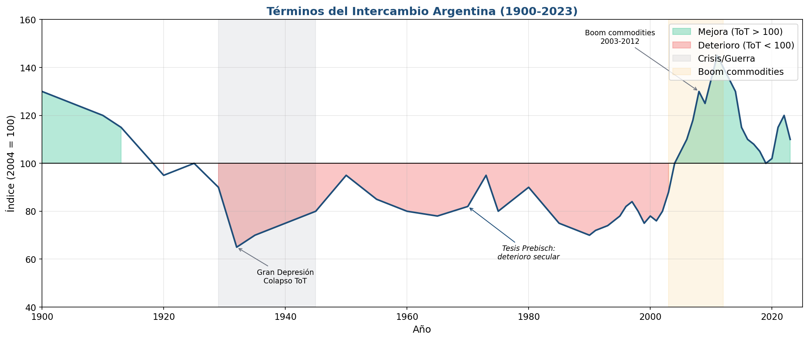
Fuente: CEPAL / INDEC / Ferreres
- 1900-1930: ToT altos (belle époque agroexportadora)
- 1930-2000: deterioro secular (tesis Prebisch)
- 2003-2012: boom de commodities (+50%)
- Post-2012: caída y volatilidad
Indicadores de sostenibilidad (8-9)
¿Es sostenible la situación externa?
La balanza de pagos: el marco
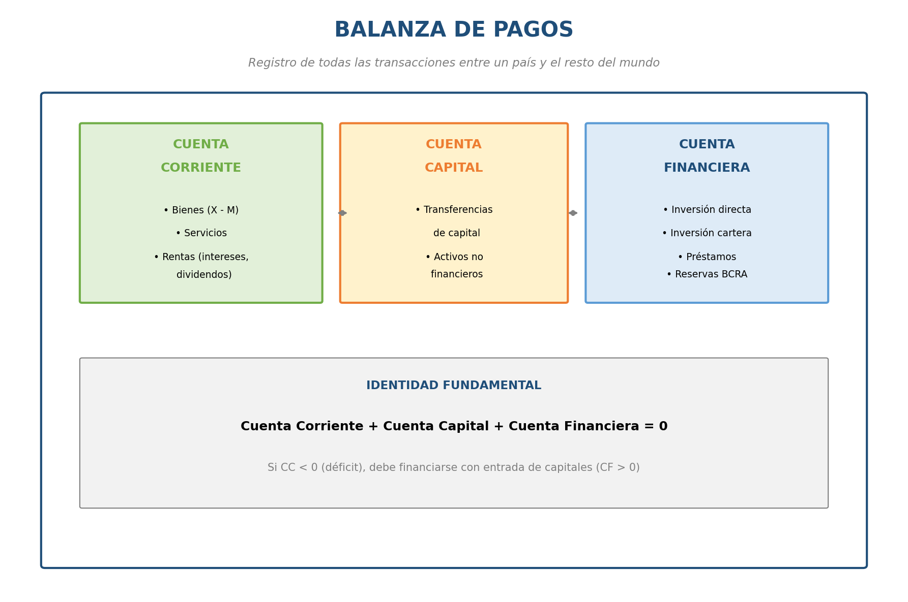
Fuente: Elaboración propia
- Cuenta Corriente: bienes, servicios, rentas
- Cuenta Capital: transferencias, activos no financieros
- Cuenta Financiera: inversiones, préstamos, reservas
- Identidad: CC + CK + CF = 0
Indicador 8: Cuenta corriente (% PIB)
- Fórmula: CC/PIB × 100
- Es el indicador de sostenibilidad más usado
- CC < 0: el país gasta más divisas de las que genera
- Déficits persistentes → eventualmente crisis
Cuenta corriente Argentina (1990-2024)
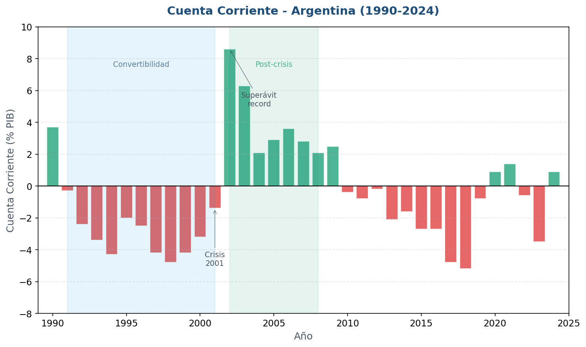
Fuente: INDEC / BCRA
- Déficit en Convertibilidad: financiado con deuda
- Superávit 2002-2011: TC competitivo + commodities
- Déficit 2017-2018: apreciación + sequía → crisis
- La CC anticipa las crisis
La identidad ahorro-inversión
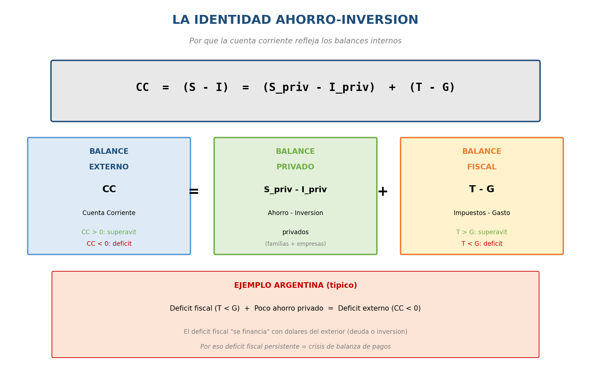
Fuente: Elaboración propia
- CC = S - I (ahorro menos inversión)
- CC = (S_priv - I_priv) + (T - G)
- Déficit fiscal + bajo ahorro = déficit externo
- Por eso el FMI siempre pide ajuste fiscal
Indicador 9: Tipo de cambio real
- Fórmula: TCR = e × P* / P
- e = tipo de cambio nominal
- P* = precios externos, P = precios internos
- TCR alto = peso barato (competitivo)
- TCR bajo = peso caro (no competitivo)
Tipo de cambio real Argentina (1997-2024)

Fuente: BCRA (ITCRM)
- Base 100 = promedio histórico
- < 100 = peso apreciado (caro en dólares)
- > 100 = peso depreciado (barato en dólares)
- Patrón: apreciación gradual → devaluación brusca
Reservas internacionales Argentina
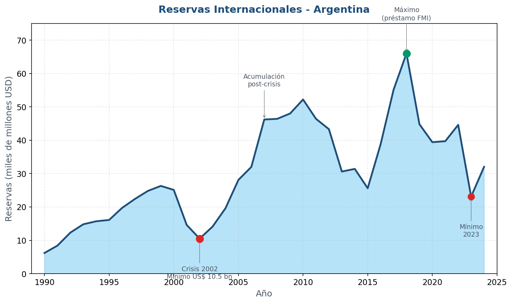
Fuente: BCRA
- Reservas = capacidad de defender el tipo de cambio
- Caen antes de las crisis (2001, 2018)
- Se acumulan en buenos tiempos (2003-2011)
- Regla: mínimo 3 meses de importaciones
Hechos estilizados y desequilibrios
¿Qué patrones vemos con estos indicadores?
Desequilibrios globales: quién financia a quién
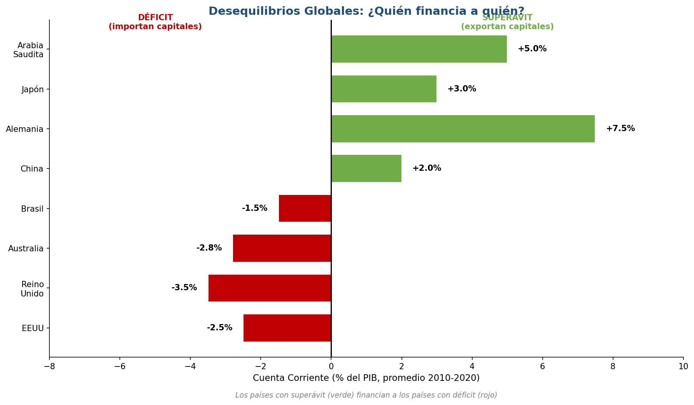
Fuente: FMI WEO
- EEUU: déficit persistente (importa capitales)
- China, Alemania: superávit persistente (exportan capitales)
- Este patrón es estable hace décadas
- ¿Es sostenible?
El privilegio exorbitante del dólar
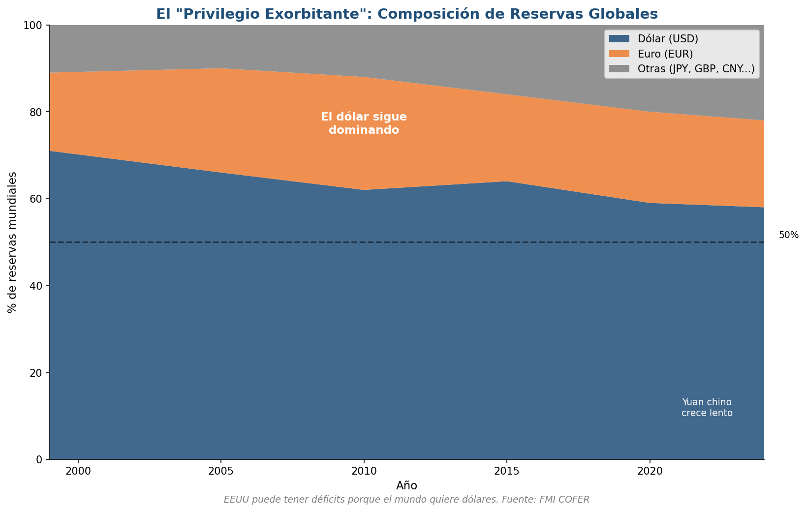
Fuente: FMI COFER
- El dólar es ~60% de las reservas mundiales
- El mundo QUIERE dólares
- EEUU puede "imprimir" la moneda de reserva
- Ningún otro país tiene este privilegio
Asia: la lección de 1997
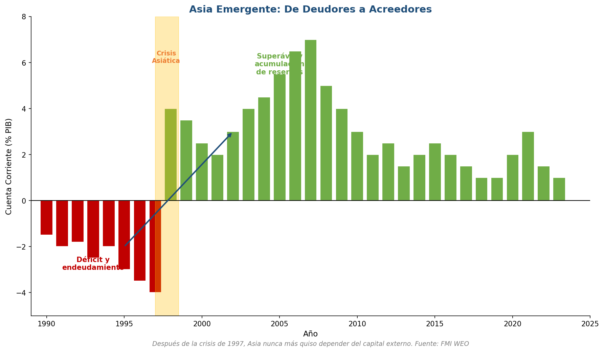
Fuente: FMI WEO
- Antes de 1997: déficit, endeudamiento, TC fijo
- Crisis 1997-98: colapso brutal
- Después: superávit permanente, acumulan reservas
- Lección: nunca más depender del capital externo
El caso argentino
Aplicación de todos los indicadores
El ciclo argentino
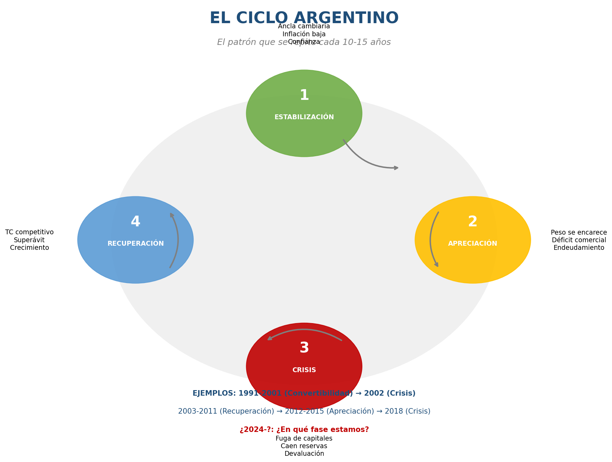
Fuente: Elaboración propia
- 1. ESTABILIZACIÓN: ancla cambiaria, baja inflación
- 2. APRECIACIÓN: peso caro, déficit, endeudamiento
- 3. CRISIS: fuga, caen reservas, devaluación
- 4. RECUPERACIÓN: TC competitivo, superávit
La Convertibilidad: caso de estudio
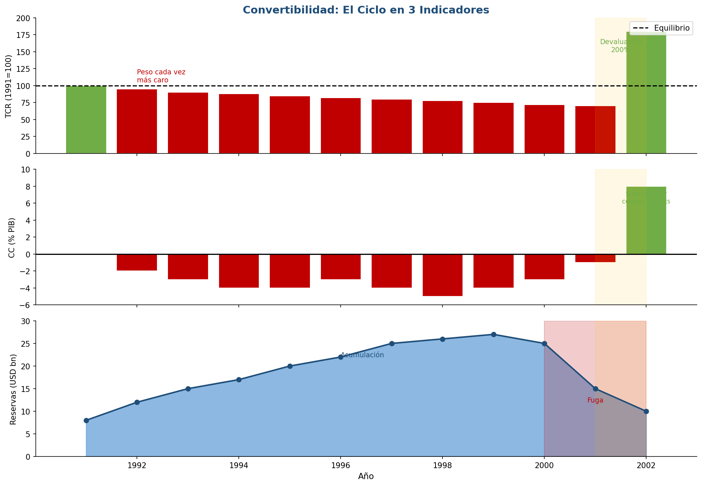
Fuente: BCRA / INDEC
- TCR: cayó de 100 a 70 (peso 30% sobrevaluado)
- CC: déficit persistente (-4% a -5% PIB)
- Reservas: subieron y luego colapsaron
- 2002: devaluación, ajuste, recuperación
Resumen: los 9 indicadores
- Comercio (1-4): índice, participación, HHI, cobertura
- Competitividad (5-7): balanza, apertura, ToT
- Sostenibilidad (8-9): cuenta corriente, TCR
- Los últimos dos anticipan las crisis
¿Dónde buscar estos datos?
Fuentes principales por indicador
- Comercio histórico (1-4): Federico-Tena World Trade Historical Database / OMC
- Balanza comercial y apertura (5-6): Banco Mundial (data.worldbank.org) / INDEC
- Términos de intercambio (7): CEPAL / INDEC / Ferreres (series históricas)
- Cuenta corriente y reservas (8): INDEC / BCRA / FMI (World Economic Outlook)
- Tipo de cambio real (9): BCRA — Índice de TC Real Multilateral (ITCRM)
Hechos estilizados: lo que aprendimos
- 1. El comercio puede colapsar (1914-1945)
- 2. EEUU tiene déficit porque emite dólares
- 3. Los desequilibrios globales son estructurales
- 4. Argentina repite un ciclo predecible
- 5. El TCR y la CC anticipan las crisis
Próxima clase
Teorías del comercio
- ¿Por qué comercian los países?
- La visión mercantilista: comercio como guerra
- Adam Smith y las ventajas absolutas
- El debate que sigue vigente
Material complementario
Videos y documentales recomendados
- **Ray Dalio — "How The Economic Machine Works"** (YouTube, 30 min) — Ciclos de deuda, balanza comercial y tipo de cambio explicados con animaciones
- **"Memoria del Saqueo"** (Fernando Solanas, 2004) — La crisis argentina de 2001: cuando la cuenta corriente y la deuda se descontrolan
- **"Life and Debt"** (Stephanie Black, 2001) — Jamaica y el FMI: qué pasa cuando la apertura comercial destruye la industria local
- **"American Factory"** (Netflix, 2019, Oscar mejor documental) — Fábrica china en Ohio: globalización, ganadores y perdedores
¿Preguntas?
Economía Internacional | Clase 2